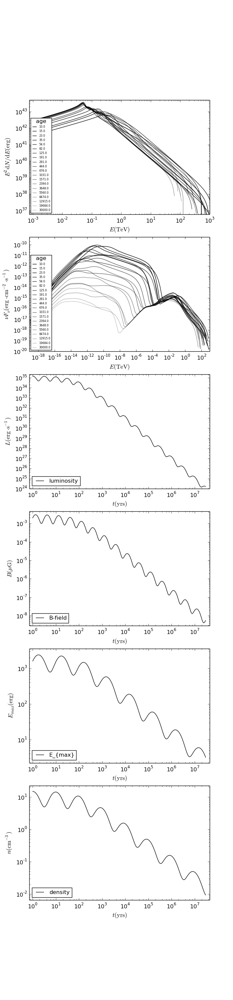

Level 4: Photon Spectrum, Particle Evolution, Almost Everything Variable¶
In this section we also make a lot of stuff variable in time. This include the B-field and the ambient density, which means that energy losses become time-dependent. The assumed time-dependence has no specific physical meaning.
In order to add a time-dependence in all of these parameters, the procedure is analogue to what was done in the last level with the luminosity.

- We expand the luminosity function to give us additional 2D-
listsfor density, maximum electron energy, ambient density and the B-field:def GetSpindownStuff(tc, age, l0, b0, emax0, n0): t = np.logspace(0,math.log10(1000.*age),300) lumt = [] emaxt = [] bt = [] nt = [] n = 0 for i in t: l = l0/math.pow(1.+i/tc,2.) btt = b0*math.sqrt(l/l0)*(1.+0.5*math.sin(0.1*n*3.14)) lumtt = l*(1.+0.5*math.cos(0.1*n*3.14)) emaxtt = emax0*math.pow(l/l0,0.25)*(1.+0.5*math.sin(0.05*n*3.14)) ntt = n0*math.pow(l/l0,0.25)*(1.+0.5*math.cos(0.05*n*3.14)) bt.append([]) bt[n].append(i) bt[n].append(btt) lumt.append([]) lumt[n].append(i) lumt[n].append(lumtt) emaxt.append([]) emaxt[n].append(i) emaxt[n].append(emaxtt) nt.append([]) nt[n].append(i) nt[n].append(ntt) n = n+1 return lumt,bt,emaxt,nt
- usage of these parameter evolution works as follows:
fp.SetLuminosityLookup(lumt) fp.SetBFieldLookup(bt) fp.SetEmaxLookup(emaxt) fp.SetAmbientDensityLookup(denst)Note
Particle evolution with time-dependent losses is in general not possible with analytic or semi-analytic methods. Using parameter evolutions that result in time-dependent energy losses thus internally call a grid-solving algorithm, whose calculation speed depends on the physics of the system. The grid solver is slow if time steps are small. Those are given by
Therefore, the calculation can take a long time, if
- energy losses are high
- the number of spectrum bins is large
Furthermore, currently protons are considered to only lose energy by adiabatic losses (i.e. not due to p-p collisions), and only if an expansion speed is given. As these losses are normally relatively low compared to typical electron losses, speed problems normally are not an issue for the evolution calculation of protons.
- for the following plots, we set two additional parameters:
fp.SetBreakEnergy(ebreak) fp.SetLowSpectralIndex(spindlow)Hint
Since power-law and broken power-law particle distributions are the most common in high energy astrophysics, those two models are pre-available in
GAMERAand can be used by setting luminosity, minimal energy, maximal energy and the spectral indices and break energies (as shown in all the previous examples). If you want to use different shapes of the particle injection spectrum, you can provide this with theSetCustomInjectionSpectrumorSetCustomInjectionSpectrumLookupmethods. The former specifies a custom injection spectrum that is constant over time (2Dlistorvector), whereas the latter allows for a injection spectrum that is time-dependent (input 3Dlistorvector). If these methods are used, the luminosity and energy boundaries are fixed by the input spectrum and do not have to be specified via Set functions.

{kind=link}